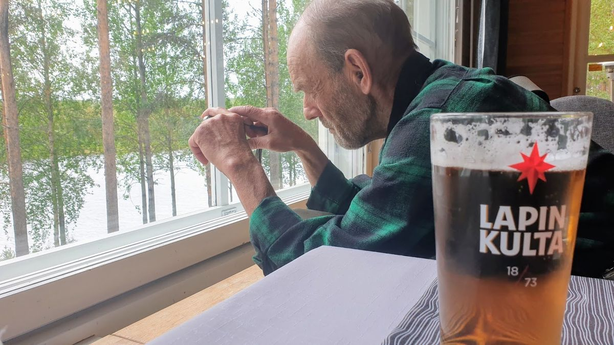
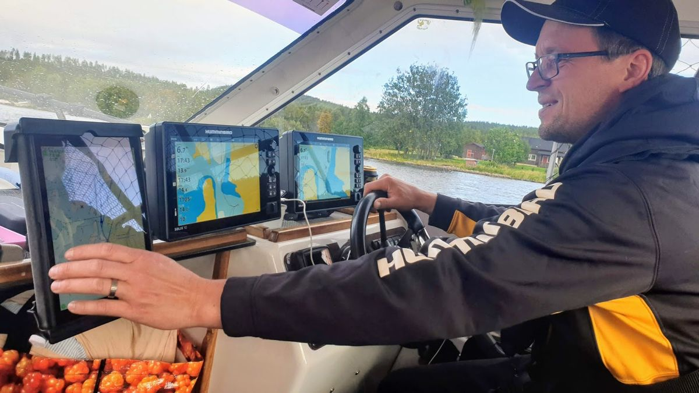
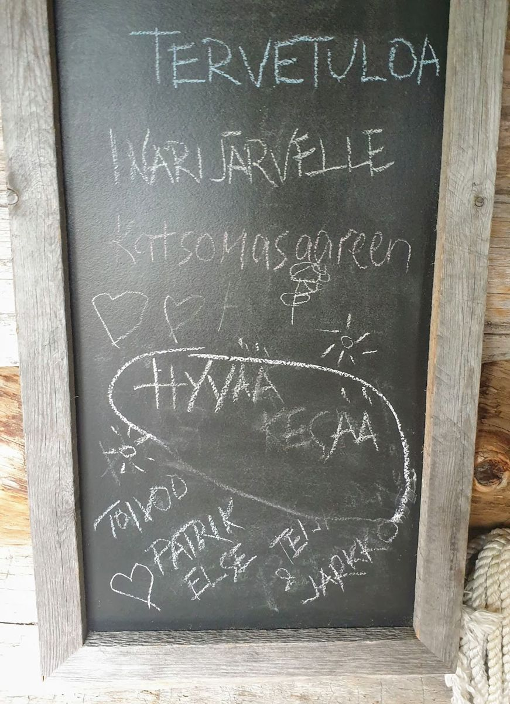
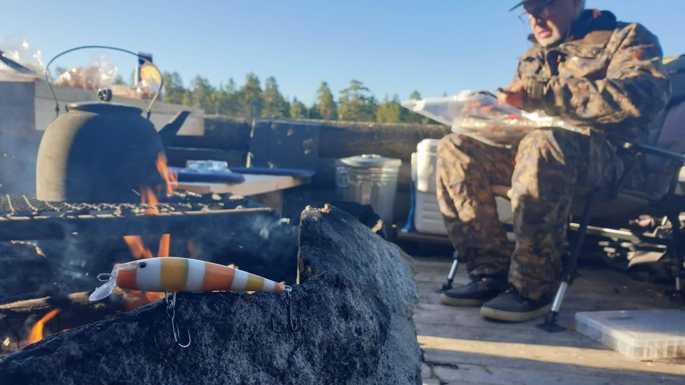
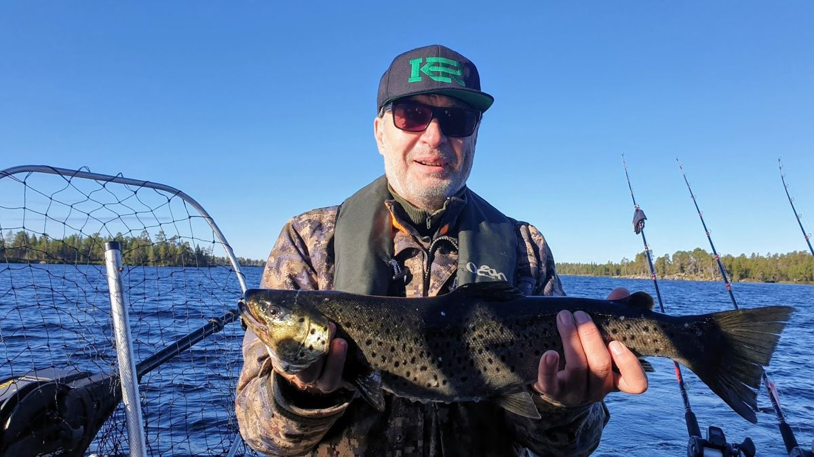
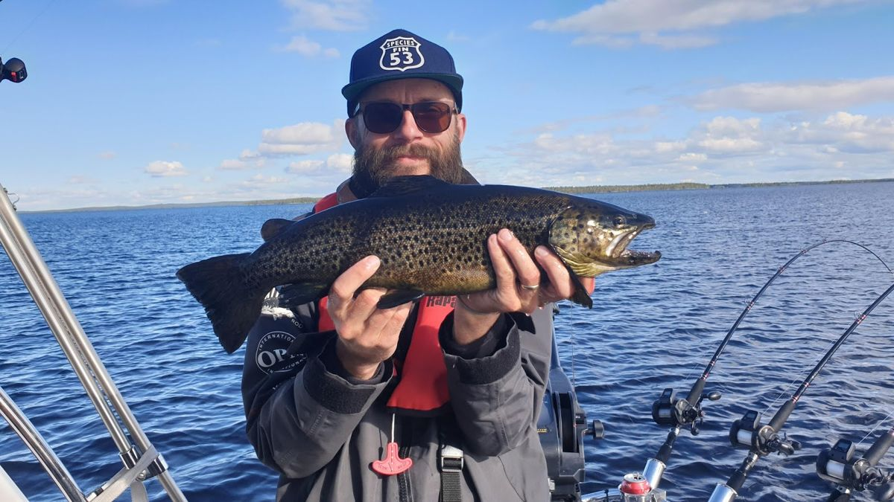
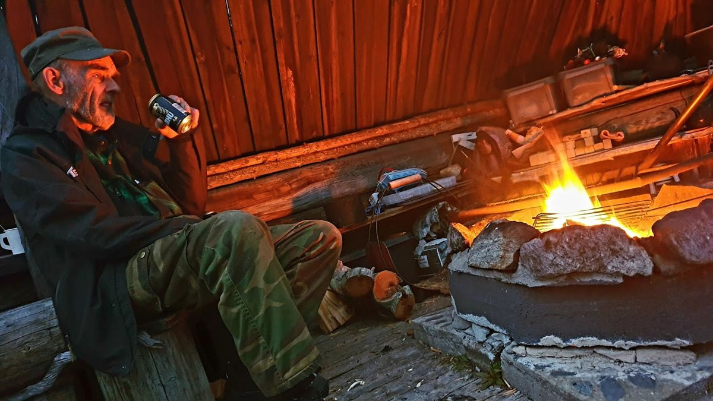
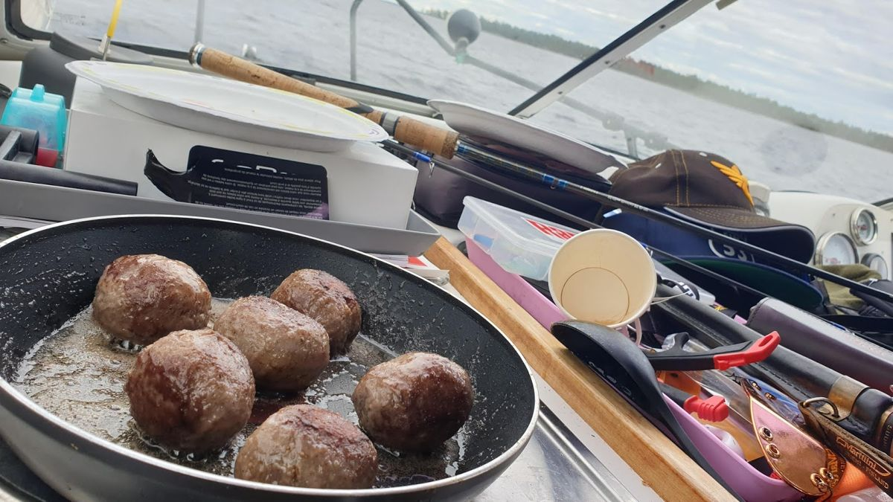
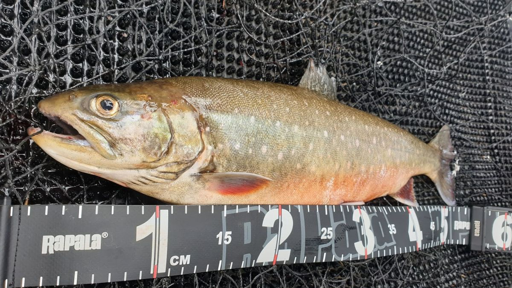
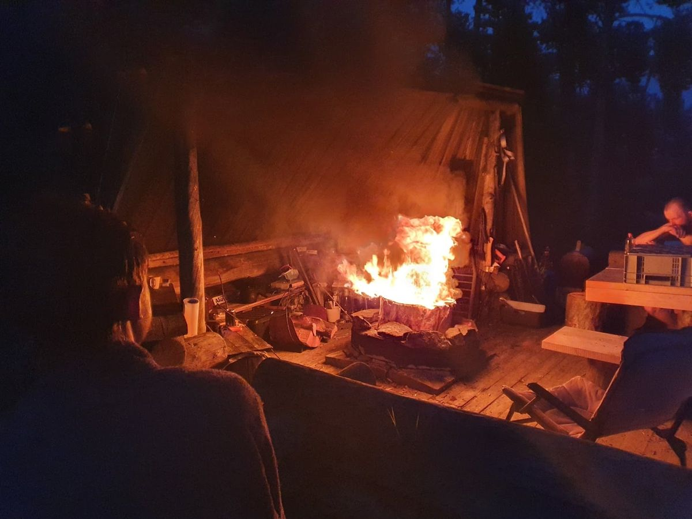

Blogitekstit · Syyskuu 2020
Päivä 2, 3 ja 4 - Kohti Ivaloa ja Inarinjärveä

Heräsin yöllä useasti alasängyssä pyöriväni isäni heräilyyn. Lopulta hieman ennen kuutta päätin nousta ylös, pakata makuupussini ja siirtyä aamupalaa syömään.
Mökin nurkassa Juha heräili myös touhuni seurauksena, kysyen unenpöpperössä;
Mitä kello on?
Vähän vaille kuus, eiku on se jo neljä yli kuus. Vastasin hänelle.
Sisäinen kello duunimoodissa, pahoittelin kolailujani.
Isät nukkuu aina kun mahdollista.
Totesi Juha.
Pakkasimme auton ja siivosimme mökin, matka kohti Ivaloa voi alkaa. Aikaa olisi reilusti, Jarkon kanssa olimme sopineet treffit Veskoniemen venesatamaan kuudeksi. Ajelimme halki hiljaisen maiseman, horisonttiin piiryi ukkosrintaman tummat pilvet ja kuurosateiden välissä taivaan halkoi upea sateenkaari.
Ajelimme Sallan ja Savukosken kautta. Savukoskella nautimme lounaan Samperin Savotassa Kemijoen rannalla.


Isäni tilasi poronkäristystä ja alashuuhtojaksi Lapin Kultaa. Kyllä siinä naatittiin koko rahan edestä. Seikkailimme aikaa kuluttaaksemme hieman pidempää reittiä pitkin kohti Ivaloa. Kävimme myös Kaunispään huipulla jaloittelemassa ja ihastelemassa kauas horisonttiin piirtyvää upeaa erämaata.
Vetäisin Juhan bemarin parkkiin S-marketin eteen Ivalossa. Parkkeeraus meni kirjaimellisesti vinoon, autosta nousessani huomasin, että viiva meni auton ali suoraan, tosin auto oli vinossa.
Bemarikuskit voi tehdä näin, se on kuulemma ihan normaalia toimintaa.
Kaupassa käynnin jälkeen otimme suunnan Veskoniemen venesatamaa, mistä hyppäisimme Jarkon veneen kyytiin.


Katsomasaaressa sijaitsevalla mökille meille oli varattu vierasmökki. Iskä majoittui vuodesohvalle alakertaan ja me nuoremmat kömmimme yläparvelle. Nappasimme mökin keittiössä tervetuliais rommit ja lähdimme tekemään tulia nuotiopaikalle sekä saunan pesään.


Istuimme saunan jälkeen iltaa rantalaavulla rupatellen mukavia ja rommikolia juoden. Kultarinne niminen mökkipaikka oli kyllä kultaa. Pimenevä ilta ja täysin tyyni järvenpinta siivitti matkamiesten juttutuokiota ennen yöpuulle siirtymistä.
Päivä 3. Inarinjärven aalloilla - pistekalajahtiin


Aamukahvit rannassa, nokipannun nokasta jo leijaili ympäristöön houkuttava aamukahvin tuoksu. Rannan heinikon reunassa kävi kala pinnassa ja männyssä kuukkeli pariskunta pomppi ympäri puuta. Hain päämökistä aamupalatarpeet rantaan ja nautimme koko porukka kahvit ja aamupalat rannassa.
Sovimme, että isäni jää nauttimaan saaren antimista ja pilkkoo aikansa kuluksi puita jos jaksaa. Me lähdimme kaiman ja Jarkon kanssa uistelemaan päiväksi.
Raudulle oli varapaikka Utsjoella ja Karigasniemellä, sieltä sen saisi napattua tutuista lammista jos Inarinjärvi ei rautua tarjoa sivusaaliina. Pari muuttujaa, jos rautupiste saataisiin jo tänään, voisi harmaanieriää uistella kaksi päivää.
Jos ei, pitäisi sunnuntaina ajaa Karigasniemen tuttuun rautupaikkaan lajipiste kalastamaan. Tämä suunnitelma jatkui niin, että olisimme menneet Kapsajoelle Saulin vieraaksi. Myös jos kirjoeväsimppua ei kylmäluomasta olisi noussut, olisi sauli saanut meidän vieraakseen.
Ennen lähtöä Juha kaivoi viehearsenaalinsa laiturille. Tiukan seulan ja koeuiton sekä uinnin säädön jälkeen ottipelit oli mietitty. Sovimme, että Jarkko valitsee kolme ja me yhdeksän viehettä vetoon.
Aloitimme vieheiden laskun pikkuplaanareiden virittämisellä. Jarkko opasti, ja minä ja Juha laskimme ohjeiden mukaan vieheet pyyntiin.
"150 vapari, pieni paino plaanari ja sit reilusti ulos. Seuraava 140 vapari, pieni paino plaanari ja vähemmän ulos kuin edellinen, viimeinen 130 vapari, paino plaanari ja ulos lasku."
Lähdettiin Jarkolle tutusta paikasta laskemaan vieheitä pyyntiin. Juha oli laskemassa kolmatta settiä kun tärähti.
"Kala, laiska on, mutta kala on kiinni."
Laiskasti siiman päässä tempoileva reilusti mitallinen taimen avasi pelin järvellä ja pääsi verestyksen jälkeen jäiselle kuolinpedilleen lepäämään, ennen seuraavaa ravintoketjun vaihdetta.


Jatkoimme välineiden laskua ja opimme joka setin laskulla jotain uutta. Jarkon takilavirityksen idea on, että kalan noustessa vieheelle näkee se eri pituuksilla tulevat järjestyksessä niiden muodostavan tietyn "kuvion" ansiosta.
Saimme vielä toisen taimenen ison selkäveden reunasta ja lukuisia pienempiä taimenia sekä rautuja. Mitta rautu ja harmaanieriä antoi odottaa, kunnes lähes samoilla hoodeilla kuin Juhan saama taimen vapa niiasi.


Nappasin vavan käteeni ja kelasin löysät pois, kala oli kiinni, mutta ei pahemmin taistellut. Nopean väsytyksen jälkeen veneen vieressä välähti valkoinen evänreuna. RAUTU!
Jarkko nappasi haavin ja koppasi kalan kyytiin. Järvellä on raudulla alamitta vähintään 45 cm ja pyydetty kala oli reilusti mitallinen. JESH!
Mittaraudun saaminen mahdollisti toisen uistelupäivän harmaanieriäpyyntiin eikä rautua tarvitse lähteä kalastamaan muualta.

- Järvilohi, vähintään 60 cm, ei rauhoitusaikaa tällä lupa-alueella
- Taimen, vähintään 50 cm, ei rauhoitusaikaa tällä lupa-alueella
- Harjus, vähintään 30 cm, ei rauhoitusaikaa tällä lupa-alueella
- Nieriä eli rautu, vähintään 45 cm rauhoitettu 15.9.–30.11.
- Harmaanieriä vähintään 40 cm, ei rauhoitusaikaa tällä lupa-alueella
Vesiltä palatessa oli upeaa nähdä rantalaavulla päivästä nauttinut isäni ja savuvanan nousu saunan piipusta.
"Ompa hienoo päästä suoraan vesiltä saunaan." Totesi isäntämme Jarkko.
Saamani rautu meni perkauksen jälkeen halsteriin ja hiilospedin päälle. Itse nappasin kylmälaukusta grillimakkarat ritilälle raudun viereen saaden hieman hilpeitä katseita loppu seurueelta.
"Se on vähän kuin jos rautua on tarjolla ja vetää makkaraa on kuin ois naista tarjolla ja vetäis käteen."


Makkara ja rautu hävisi nopeasti parempiin suihin kylmän Karhun ja rommikolien siivittämänä. Maukkaan iltapalan jälkeen oli aika siirtyä kirkkaan tähtitaivaan alla mökkiin ja makuupussin uumeniin. Silmäluomet painui umpeen alta aikayksikön.
Päivä 4. Uistelua saariston suojassa
Viimeisen uistelupäivän aamu alkoi tyynenä, mutta päiväksi lupasi kovempaa tuulta. Evääksi kylmälaukkuun päätyi poropyöryköitä ja grillimakkaraa. Päivän pläni oli ajaa ison selän toiselle laidalla olevan saariston suojaan kalalle ja näin päästä hieman suojaan tuulilta.
Juha hyppäsi ruoriin ja ohjasti alueille joilta Jarkko on saanut oman ennätystaimenensa. Alamittaisi nousi tasaisesti, mutta isommat kalat loistivat poissaolollaan.


Päivän edetessä nälkä alkoi tulla ja paistoin porukalle poropyöryköitä hellalla. Oli muuten hyviä kun laittoi oivariinia pannulle ja antoi pinnan hiljalleen ruskettua ja lihan kypsyä miedolla lämmöllä pitkän aikaa.
Kipparina toimiva Juha päätti, että tuo pieni saari kierretään. Olimme Jarkon kanssa takiloiden kuulan syvyyttä säätämässä vaihtelevan pohjanmuotojen takia. Lopulta myös vapa takilassa niiasi. Ensimmäinen kunnon tärppi koko päivälle, ja selvästi isompi kala. Räikkä huusi ja kala sai laukaistua siiman irti.
Alkoi väsytys, kala painoi pohjaan eikä toivoakaan saada kalaa heti sisään. Hiljalleen pumppaamalla ja jarrua kiristämällä sain kalan lähemmäksi ja Jarkko onnistui sen koukkaamaan haavilla veneeseen.
Tähän oli hyvä lopettaa ja lähteä iltapalalle ja saunomaan. Ilta meni mukavia jutellen, hyvin syöden ja juoden. Inarinjärvi tarjosi parastaan, vaikka toinen tavoite jäi saavuttamatta.


Palasimme saareen hieman yhdeksän jälkeen ja näimmekin isäni saunan terassilla nauttimassa olutta. Sauna oli lämmin, on hienoa päästä suoraan vesiltä saunaan ja heti perään syömään. Nyt istuimme kuitenkin saunan happihyppelyn ajan nuotion ääressä.
Suuri kaatuneen kelon laho runko lämmitti nuotiossa monen metrin etäisyydelle metrisellä liekillään. Nuotion lämmessä oli kiva jutella mukavia vain pyyhe päällä.


Seuraavassa tarinassa onkin pari muuttujaa... Lue se tästä.